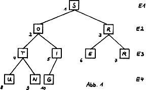
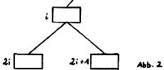
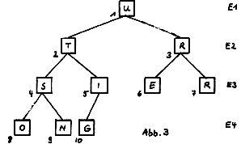
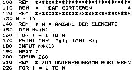

Nascom Journal |
Januar 1982 · Ausgabe 1 |
mehrere Spieler gleichzeitig am Computer spielen können, und auch der Spielstand notiert wird. Anbei das komplette Listing. (Haben wir aus Platzgründen nicht abgedruckt. Das Programm kann in einem „Rundlauf“ auf Cassette angefordert werden. –Red.)
Ich möchte gleich die Gelegenheit nutzen zur Dezember-Ausgabe zu gratulieren. Wirklich gut gemacht. Im Programm „Quest“ habe ich einen Fehler entdeckt, der wahrscheinlich keinem auffallen wird: wenn man nach der ersten Schatzsuche noch nicht genug hat (so wie ich) und auf die Frage hin noch eine Schatzsuche fordert (Zeile 1180), hängt sich das Programm mit einem „RG-ERROR“ auf. Die Zeile 1190 springt nämlich mit „GOTO“ in eine Subroutine. Am besten statt der Zeilen 1170 bis 1190 ein Delay einbauen.
Christian Peter, Wien.
Die bisher vorgestellten Sortieralgorithmen eignen sich nur für kleinere Felder, die Rechenzeit ist sonst nicht mehr akzeptabel. Schneller geht es mit dem Heap-Sort, das von Williams und Floyd entwickelt wurde.
Zum Verständnis ist die Kenntnis eines binären Baumes sehr hilfreich. üblich ist die Darstellung einer Folge aus Buchstaben in einer von links nach rechts verlaufenden Reihe. Andere Formen wären von rechts nach links (arabisch) oder von oben nach unten (chinesisch). Bei einem binären Baum ordnet man die einzelnen Bestandteile in mehreren Ebenen. Jede Ebene enthält die doppelte Anzahl an Buchstaben wie die über ihr liegende. Lediglich in der untersten Ebene kann dies meist nicht aufgehen.
Jedem Element werden nun 2 (daher binär) unter ihm liegende Elemente zugeordnet. Dreht man Abb.1 auf den Kopf, erhält man das Bild eines Baumes. Behält man die laufende Numerierung des Feldes bei, gehören zu einem Feldinhalt i („Vater“) die Felder 2i und 2i + 1 („Söhne“).
Ist der Inhalt von i größer oder gleich dem Inhalt von 2i und auch 2i + 1, spricht man von einem Heap. Auch ein „kinderloser Vater“ ist dann ein Heap.
Im ersten Teil des Programms (Zeile 280 – 320 mit Unterprogramm 410 – 520) wird nun der Heap angelegt. Element N/2 ist von rückwärts gesehen der erste „Vater“ mit einem „Sohn“. Im Unterprogramm wird dem „Vater“ der größte Wert zugewiesen. Nach Abschluß dieses Programmteils befindet sich der größte Wert in der Ebene E1 (siehe Abb. 3).
Im 2.Teil wird nun der 1.Wert an das Ende gelegt und dann nicht mehr beachtet. Der Heap wird nun für die restlichen Felder wieder neu angelegt, der größte Wert an die vorletzte Stelle gebracht und so fort.
| Seite 5 von 35 |
|---|